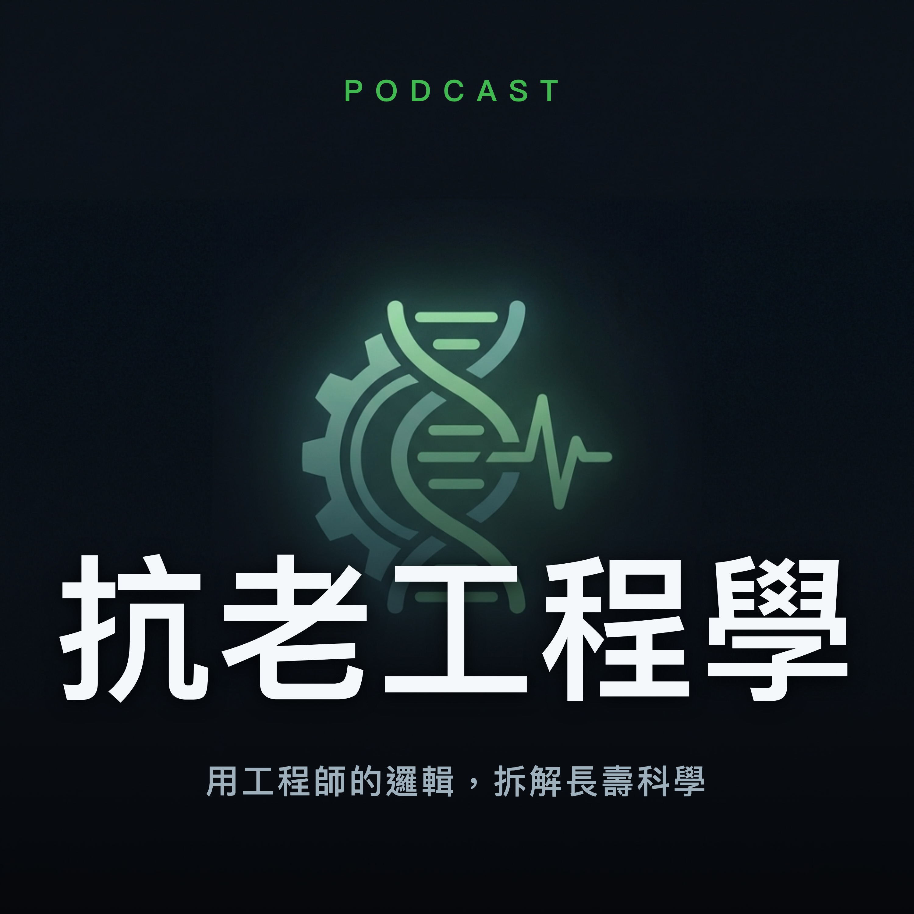

抗老工程學
用工程師的邏輯，拆解長壽科學
用第一性原理和工程師的類比，把血糖、膽固醇、脂肪酸、纖維、肌力訓練、皮膚抗老這些長壽科學，一集一個主題講到你徹底聽懂。不灌雞湯、不賣補品，只給你能自己判斷的核心原理。
RSS
Apple Podcasts
Spotify
EP1 糖的科學：葡萄糖分子在你身體裡的完整旅程
不灌雞湯，直接從第一性原理出發，像 debug 程式碼一樣把糖在身體裡的完整旅程講清楚。